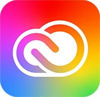

www.janessa.com/welcome.html
www.janessa.com/aboutMe.html
www.janessa.com/chat.html


Welcome
Hey Y'all!
I'm Janessa Groves. Welcome to my portfolio website! As you might have guessed, here you will be able to view a handful of my favorite projects and learn a little bit about me. If you'd like, you can glimpse inside my mind and read about my process. After you take the time to poke around, you can also use this website to get in touch with me if you would like to work together in the future. Don't hesitate to ask me any questions you might have. I don't bite, promise!
About Me
Janessa Groves
"You heard about Pluto? That's messed up, right?"
- she / her
- web dev / student
- Yukon, Oklahoma
Last Login:
date
Contact Janessa
Janessa's Interests
| General | Cats, Fuzzy Socks, Caffeine, Rainbows, Mountains, Pokémon, Splatoon, Carbs, Puzzles, Sleep, Flair Pens, Collecting Books That I Don't Actually Read, Cheese Pizza, Wandering Around Target, Crafts |
|---|---|
| Music | I listen to Lo-fi & Synthwave when I work; Melanie Martinez, Lights, Sasha Alex Sloan, Emarosa, Yoste, Issues, Jonny Craig, Tokio Hotel, Mayday Parade, All Time Low, and many, many more... |
| Shows | Psych, The Office, Parks and Rec, Abbott Elementary, Ghosts, OMITB |
| Movies | A Fantastic Fear of Everything, Mary and the Witches Flower, almost anything Pixar, & more! |
About Janessa
My love for code began many years ago when I would spend hours on Myspace (does this page look familiar now?). Back then, I wanted to be a graphic designer and did not realize the opportunity for web development. My graphic designer dreams took a backseat as I followed my husband in the early parts of his Navy career, but I eventually set out on my journey. Everything happens when it is supposed to.
I'm a (soon-to-be) graduate. I attend Arizona State University (ASU) and pursued my Bachelors of Science in Graphic Information Technology (GIT) & minored in Educational Studies. Which is a fancy way to say that I dipped my toes into a bit of all the intermingled mediums of the digital world, but my focus area was web design and development. My minor was added because I aspire to be a teacher. I want to bring code and digital literacy to people of various ages and backgrounds.
I have learned many graphic arts skills and how to use a wide array of industry standard tools. I took courses in graphic design, video production, digital photography, and multimedia techniques. As I focused on web design and development, I took a special interest in usability and writing for the web.
Janessa's Top 8 Tools
- HTML
- CSS

- JavaScript
- VSCode
- Adobe XD

- Creative Cloud
 - GitHub

- Pencil (& Paper)
Chat with my "Chatbot"
🙀
Sorry! How Embarassing!
My site isn't responsive, yet. Please resize your screen to larger than 1120px.
If you're unable to, but want to get ahold of me, feel free to email me!
Comments